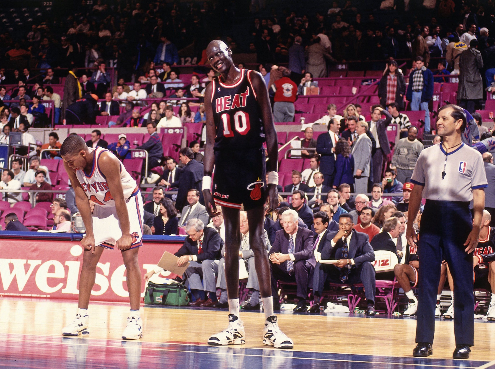
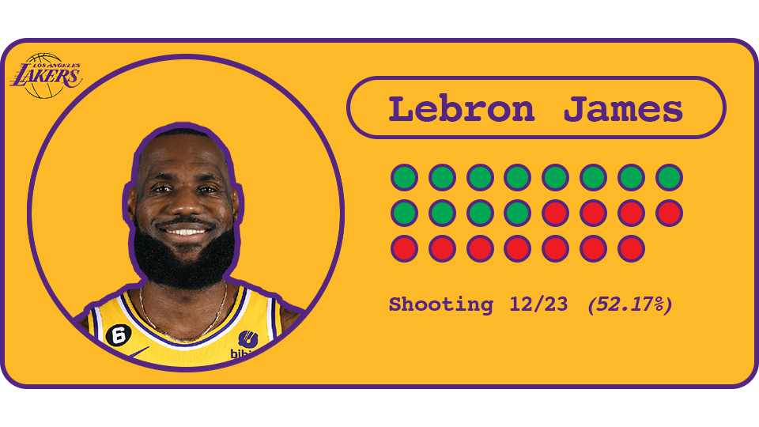
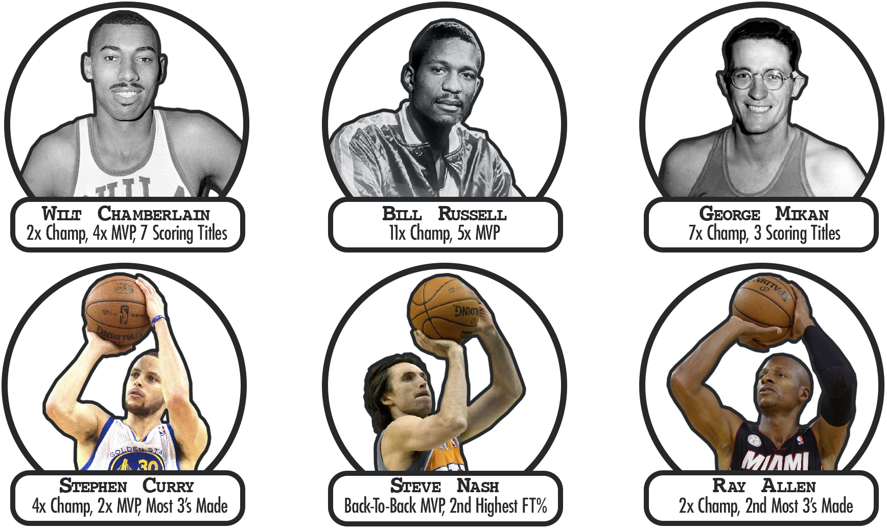
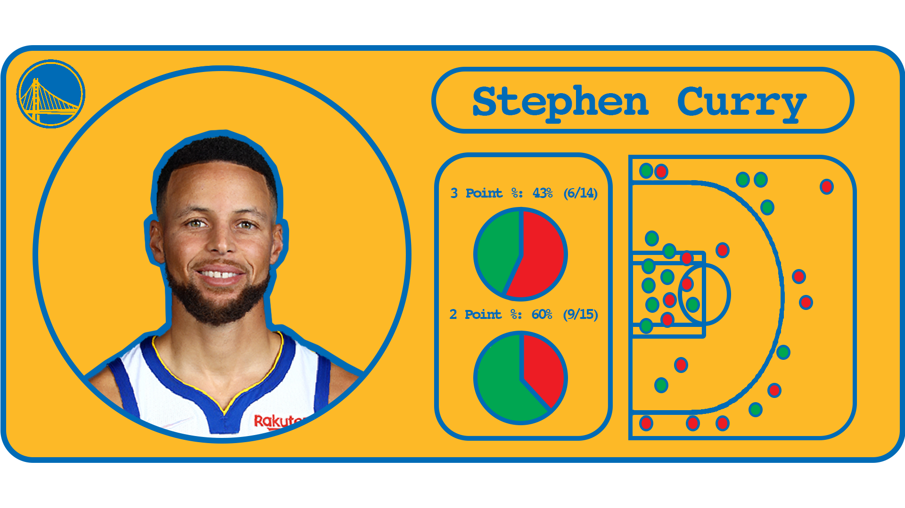

I am a big time basketball fan, while I don’t sit down to watch every NBA
or college game, I always do explore the game statistics online after the
games end. Basketball has always been an interest of mine, but I never was
too successful in the playing side for two reasons: I am average in terms
of my athleticism, and more importantly, my height. I am 5 '10, which is
less than ideal for becoming a good basketball player. Everyone knows that
in order to become an NBA player–aside from a few exceptions–being tall is
very helpful. But is it possible to be too tall for the NBA? At what point
does height turn from an advantage to a detriment? And are there
significant relationships between height and other recorded statistics?

We begin by exploring the most basic statistic in the NBA, field goal
percentage. Field goal percentage is a good way to understand a players
general efficiency at scoring the basketball. Field goal percentage is
measured by dividing made field goals by total field goals attempted, (If
Lebron James shoots 23 shots in one game and makes 12, his field goal
percentage is 52.17%).

As is evident in the interactive graph, there is correlation
between height and total field goal percentage. However, this data is
misleading because it does not take into account the fact that a made
three-point field goal is worth more than a made two-point field goal.
Without this knowledge, we would be led to believe simply that “height is
everything”, but that is not the case. While someone who is 6 '10 is going
to generally score at a higher rate close to the basket compared to
someone who is only 5' 10, that does not mean that height is everything.
But height was everything before the 3 point line was introduced in 1979.
Before this time it was unheard of to find someone who was dominant and
not also a giant as well. In those times height ruled the league, all-time
players like Wilt Chamberlain (6'10), Bill Russell (7’1), and George Mikan
(6'10) dominated and experienced an entire career before the three point
shot even existed.

This new three point shot would go on to change the
game and allow hall of fame caliber players like Stephen Curry (6’3), Ray
Allen (6’5), and Steve Nash (6’3) to make a huge impact on the court,
despite their relatively small stature.

Continuing on, we take a look at the seemingly steady increase in 3 point
attempts over the past 25 seasons. As is evident, players are attempting
more and more 3‘s as the years go on. What is the reason for this trend?
Is it a result of analytics?. Well if a 3 pointer is worth 3 points, then
that means that it is worth 50% more than a 2 pointer. Why is this important?
Well, if a team is able to make 3 pointers with at least ⅔ of the percentage
that they make 2 pointers, then they would be better off shooting 3’s as they
are gaining more points per shot attempt, and thus higher efficiency. For example,
if Stephen Curry shoots 43% from 3 on (6/14), and 60% from 2 (9/15), then he
would be more efficient shooting 3’s than 2’s because 43% of 3 (1.29) is
higher than 60% of 2 (1.20), thus yielding more points per attempt. In this
example, Curry is making 3 pointers with at least ⅔ the percentage he is making
2 pointers.

An offensive possession where you score an average of 1.29 points per possession
as compared to 1.2 points per possession yields 7.5% or .09 more points per possession.
While that does not sound like much, teams are always searching for ways to win more games,
and analyzing a certain metric such as the value of a 3 vs a 2 can help to win more games.
There are 82 games in a regular NBA season, it is a grind, and understanding how to be more
efficient can be the potential difference between making the playoffs and missing them
Now, how does this relate to height?

As was mentioned previously, shorter players could not really compete before the three point line was added. But with its addition, it grants shorter players the ability to make an impact on the court. But this still doesn’t fully explain why shorter players shoot 3’s better on average than taller players. If the 3 point shot is so valuable in today’s game, then why aren’t taller players shooting the 3 at the same efficiency as shorter players? Well lets go back to middle school basketball. You’re a coach, you have 5 kids who are 4’8, 4’9, 4’11, 5’3, and 5’8. Who are you putting in at center? Exactly. That 5’8 kid will forever be stuck down low under the rim grabbing rebounds, never being taught to develop any shooting or ball handling skills simply because they were the tall one on the team early on. The tall kid will focus on working on skills that play off of their height advantage (rebounding, blocks, post-scoring). With this height advantage also comes the obvious trend of a higher scoring rate on 2 point attempts for taller players. When the average height of an NBA player is 6'6 who would have an easier time scoring close to the rim where the tall players stay, the 6'0 point guard or the 6'11 center? Exactly.